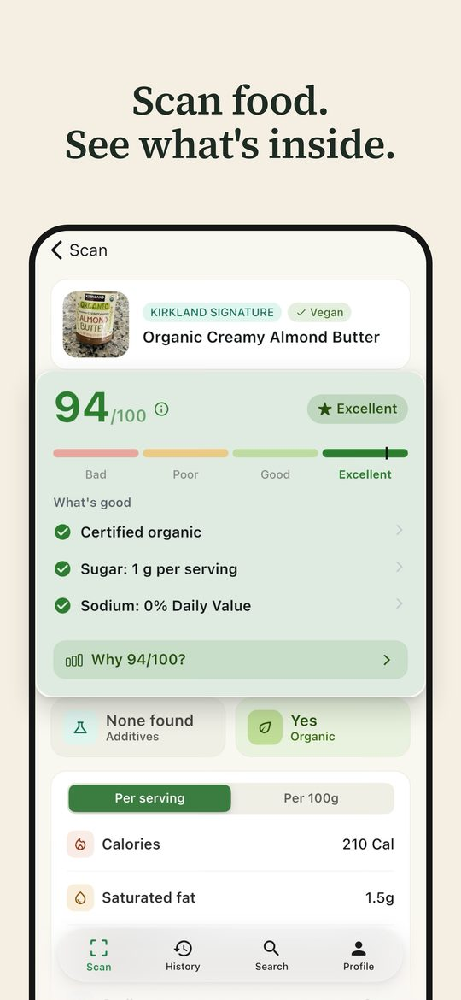
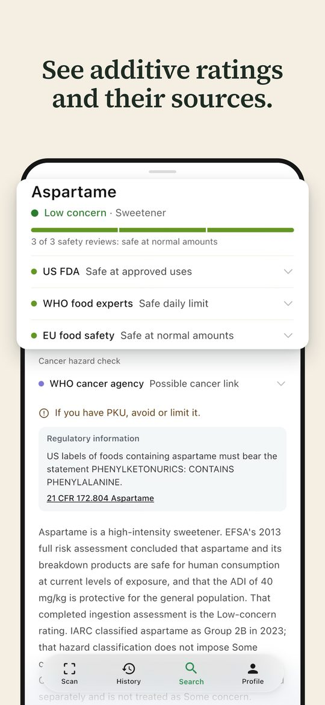
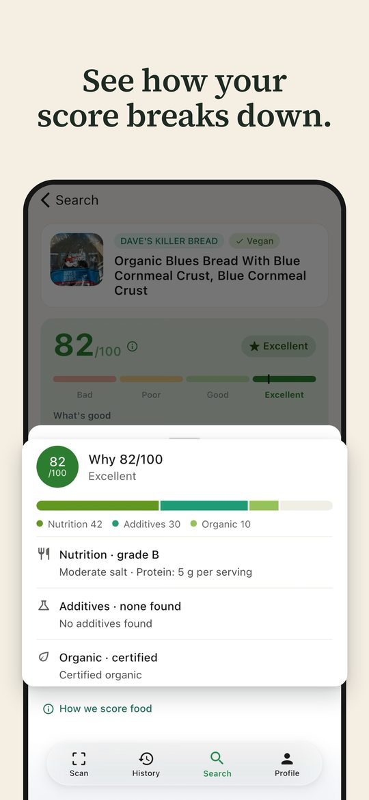
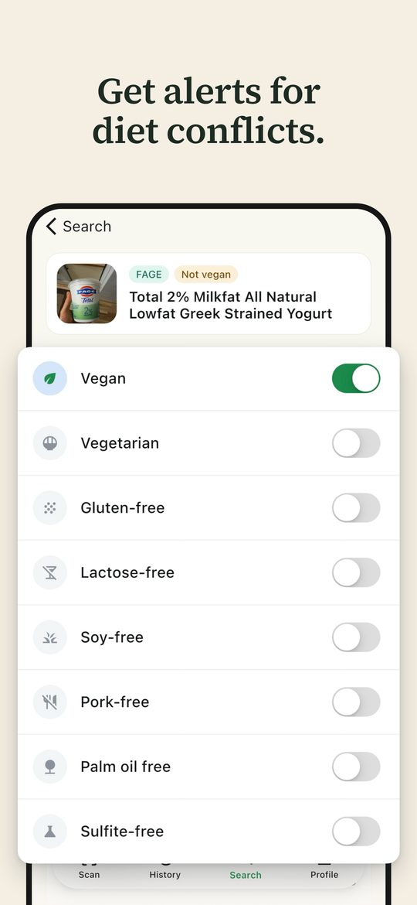
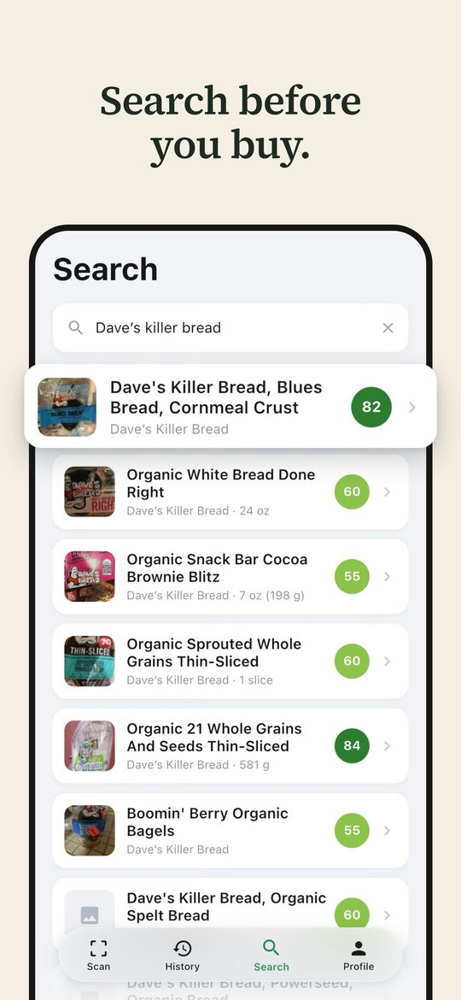

Everything on the label, made clear
Point your camera at a barcode. In a few seconds you'll know what's in it and why it scored the way it did.
See why it scored that way
Nutrition, additives and organic status, each with its points shown.
Additive ratings with sources
What each additive does, how it's rated, and which reviews the rating comes from.
Alerts for your diet
Set vegan, gluten-free, lactose-free and more. Purla flags products that don't fit.
Search before you buy
Look up a product by name and compare before it's in your cart.





When we don't know, we say so
If a product is missing the data a fair score needs, Purla tells you instead of guessing. When an additive has no safety rating, Purla labels it Not rated rather than presenting it as safe or unsafe.
score
How the score works
When enough data is available, Purla scores products out of 100 using three parts.
Nutrition
A grade from A to E, worked out with the published Nutri-Score method.
Additives
Fewer points as the highest-risk additive in the product goes up.
Organic
Extra points only when the product is certified organic.